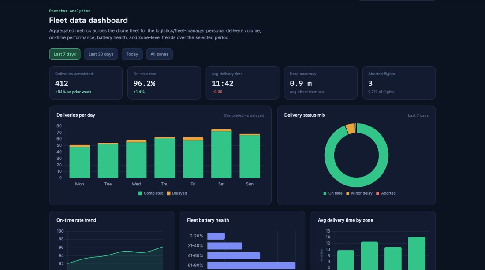

Human Factors
AeroDash: Drone Delivery Dashboard
An installable web app prototype for drone delivery operations: delivery flow, geofenced drop zones, live tracking, emergency return-to-base, and a fleet analytics dashboard.
Try the prototype →